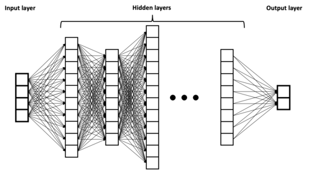
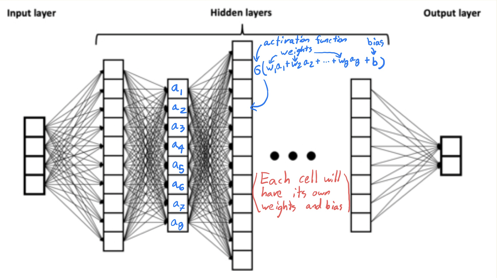

Neural networks¶
References¶
Recommended video by 3Blue1Brown:
I first learned about neural networks in this online book Neural Networks and Deep Learning by Michael Nielsen.
Chapter 10 of Hands-on Machine Learning
Introduction¶
A neural network is a special type of function. Here is a picture of a so-called deep neural network.

Image source: BrunelloN, CC BY-SA 4.0, via Wikimedia Commons
{kind=link}
The left side of the picture represents the input. The four boxes means there are four input variables (also called input neurons or predictors or features).
The right side of the picture represents the output, so in this case there are two outputs. Often there may be just one output. In the case of handwritten digits, there will be ten output neurons, one for each possible digit.
As the function is evaluated, values move from left to right. The middle portion of the image is known as the hidden layers of the neural network. When someone refers to a deep neural network, they are referring to the number of hidden layers; the more hidden layers, the deeper the network.
To create a neural network in Python, we will often start with model = keras.Sequential(). The Sequential in this case refers to how the adjacent layers are connected to each other, and how the input values move from left to right; it is also called a feed-forward multi-layer neural network or possibly multi-layer perceptron. We will use the term Dense to refer to the layers, meaning that every neuron on a given layer is connected to every neuron in the adjacent layers.
There are many other types of structures also; maybe the second most famous structure is the Convolutional Neural Network.
The formula at a single neuron¶
In the picture above, you should imagine a number in every box. The numbers in one layer determine the numbers in the next layer. The numbers on the left-most layer represent the input. Every other number is determined by a formula of the form
Here the vector \(\vec{a}\) refers to all the values at the previous layer; the vector \(\vec{w}\) refers to the weights between the layers; and the number \(b\) is called a bias. The function \(\sigma\) is what is called an activation function. One common choice activation function, especially at the output layer, is the logistic function \(\sigma(x) = 1/(1 + e^{-x})\); this is the same function we used in logistic regression. An even more common choice is the ReLU function \(\sigma(x) = \max(0,x)\).

The learning in machine learning¶
There are many different options in the design of a neural network. Before we construct it in Keras, we will typically make many choices: how many layers, how many neurons in each (hidden) layer, what activation functions to use (possibly a different activation function in each layer), and even a few more choices that we’ll discuss later. What we do not decide is the values of the weights and biases. The goal of the training algorithm is to find the best weights and biases; this goal is completely analogous to the goal of finding the best coefficients \(\theta\) in linear regression or logistic regression.
At least for me, the “learning” in machine learning is less obvious in linear regression and logistic regression, but it is very clear with neural networks. We will usually start with randomly chosen weights, and then gradually update the weights a little at a time. This procedure of updating the weights is what is meant by learning.